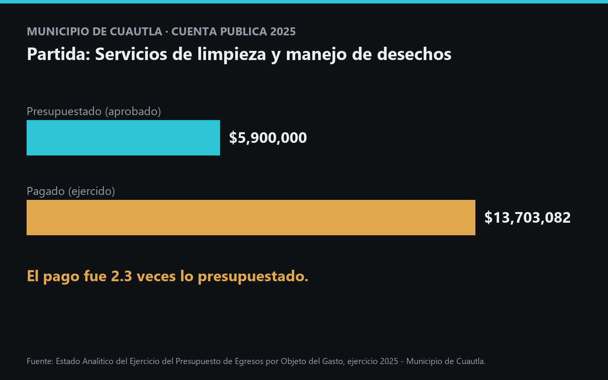
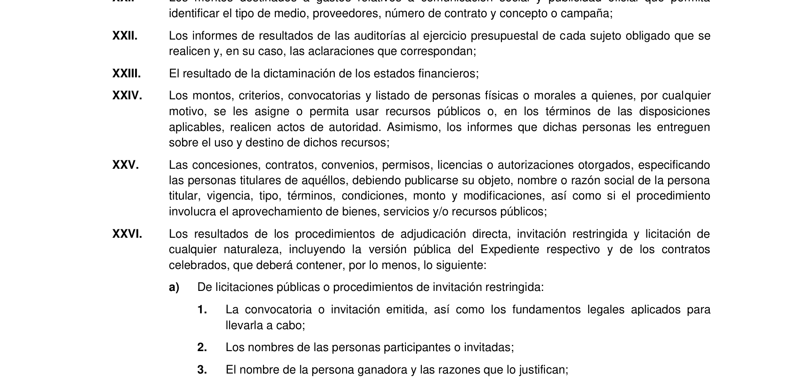

La cuenta de la basura
Cuautla paga por su basura casi un millón de pesos al mes. Una factura fiscal a nombre del municipio cobra 250 pesos por tonelada, unas 105 al día, cerca de 11.7 millones al año, y no a la empresa que opera el relleno La Perseverancia, sino a una persona física. En 2025 el municipio presupuestó 5.9 millones para toda la limpieza y pagó 13.7, más del doble, y la basura no se duplica en un año. No hay contrato publicado en la Plataforma Nacional de Transparencia, ni municipal ni estatal. Con la teoría de la captura de George Stigler: la renta pública que se queda en manos privadas.

En la Plataforma Nacional de Transparencia, el municipio de Cuautla tiene registradas 4,495 licencias de negocio correspondientes a 2025. Cada abarrotes, cada marisquería, cada changarro que refrendó su permiso aparece ahí, con su clave y su titular. Lo que no aparece, en ninguna de las fracciones donde la Ley General de Transparencia lo ordena, es el contrato del servicio que más le cuesta a la ciudad después de los sueldos: la recolección y disposición de la basura.
Los datos que siguen provienen de documentos públicos, no de versiones. De acuerdo con un comprobante fiscal digital emitido a nombre del Municipio de Cuautla, la ciudad paga el manejo de desechos no peligrosos y la disposición final a 250 pesos por tonelada. En una quincena se facturaron 1,685 toneladas, por 488,710 pesos con IVA incluido. Anualizado, el servicio ronda los 11.7 millones de pesos.
El primer hallazgo está en quién cobra. Esa factura no la expide la empresa que opera el relleno sanitario La Perseverancia, que es una persona moral, una sociedad mercantil. La expide una persona física, un particular. El municipio no le paga la disposición final a la operadora del relleno, sino a un individuo. Contratar con una persona física no es, por sí mismo, ilegal. Lo que llama la atención es el desajuste: quien cobra no es quien opera la instalación regulada.
El segundo hallazgo está en el presupuesto, y conviene detenerse porque ahí se ve la costura. Un presupuesto municipal se arma de forma incremental: se estima el año en función de lo que se pagó el anterior, más un margen. Para 2025, Cuautla aprobó 5.9 millones de pesos para toda la limpieza y el manejo de desechos. Esa cifra es la propia lectura del municipio sobre lo que cuesta la basura, heredada de la administración anterior, la de Rodrigo Arredondo López, que firmó la cuenta pública de 2024. Sin embargo, el ejercicio cerró con un pago de 13.7 millones, 2.3 veces lo presupuestado.

Aquí entra una observación de sentido común que la propia aritmética sostiene: la basura de una ciudad no se dispara así en un año. El tonelaje urbano no salta 130 por ciento de un ejercicio al siguiente. Por lo tanto, el presupuesto de 5.9 millones y el pago de 13.7 millones no pueden describir, los dos, una realidad estable. O el presupuesto se fijó corto a sabiendas, para estirarlo después mediante ampliaciones, que es exactamente lo que ocurrió, o el costo se elevó de golpe. En cualquiera de los dos supuestos, el número que el ayuntamiento presenta al público no coincide con el que paga. Y hay una forma más cruda de decirlo: solo las facturas de disposición, cercanas a 11.7 millones al año, equivalen a casi el doble de todo lo presupuestado para limpieza. La cuenta de un solo proveedor supera lo que la ciudad destinó a barrido, jardinería y basura juntos.
El insumo lo aporta el erario; la renta se queda privada. El silencio, en las cuentas públicas, nunca sale gratis.
La comparación entre administraciones apunta en la misma dirección, aunque con una reserva que conviene decir en voz alta. La cuenta de 2024, la de Arredondo, se publicó con menos detalle: solo a nivel de concepto, donde la basura queda revuelta con jardinería y mantenimiento en un bloque cercano a los 15 millones de pesos. La cuenta de 2025 sí desglosa la basura por separado: 13.7 millones. Dos partidas de 2025, basura más jardinería, ya superan todo el bloque de 2024. El gasto de esta área creció entre administraciones, y el año previo se reportó con un escalón menos de detalle. No se puede afirmar, sin el desglose de 2024, que el costo se haya duplicado con la administración actual; sí se puede afirmar que la cifra pública se volvió menos legible justo donde importaba compararla.
El tercer hallazgo es el más contundente. Se revisó la Plataforma Nacional de Transparencia seis veces, en el municipio y en el estado, en las fracciones de contratos, concesiones y adjudicaciones. El resultado es el mismo: no hay contrato, convenio ni concesión publicados para este servicio. Ni en el ayuntamiento de Cuautla, ni en la Secretaría de Desarrollo Sustentable, que es la autoridad ambiental estatal, ni en la Comisión Estatal del Agua. El artículo 65, fracción XXV, de la Ley General de Transparencia y Acceso a la Información Pública obliga a publicar las concesiones, contratos y convenios otorgados, con su objeto, titular, vigencia, monto y modificaciones. No está. No se afirma que el contrato no exista; se afirma que no está publicado donde la ley manda, y eso ya es, en sí mismo, un incumplimiento de transparencia.

Todo esto ocurre en un municipio que la Entidad Superior de Auditoría y Fiscalización del estado tiene señalado como foco rojo, con denuncias penales presentadas ante la fiscalía anticorrupción contra el presidente municipal actual, Jesús Corona Damián, y el anterior, Rodrigo Arredondo López, por observaciones no solventadas que superan los 600 millones de pesos entre 2021 y 2023. El pago de la basura no forma parte de esas denuncias, y es honesto decirlo. Pero respira el mismo aire.
Queda la pregunta que ordena todo lo anterior. Si un ciudadano, con un comprobante fiscal y la cuenta pública, alcanza a ver que este gasto se disparó, cabe preguntar por qué no lo advierten las autoridades que fiscalizan. La respuesta es de dos tiempos. La Entidad Superior de Auditoría revisa con años de retraso: a octubre de 2025 apenas había entregado la cuenta de Cuautla de 2022, y para cuando fiscalice el ejercicio 2025, la administración habrá concluido y los plazos para solventar habrán vencido, como ocurrió con las cuentas de 2021 y 2022, donde solo quedó denunciar. Pero el control que opera en tiempo real, la contraloría interna y el cabildo que aprueban las ampliaciones presupuestales, tuvo el dato enfrente cuando el presupuesto de basura pasó de 5.9 a más de 13 millones, y no consta observación alguna. El control que debía llegar primero llegó tarde, o no llegó. Esa, y no el tonelaje, es la falla de fondo.
La lectura de fondo es esta. Un relleno sanitario es un negocio de tres pisos: la ciudad paga por entregar su basura, y del otro lado alguien se queda con la tarifa de disposición, con la electricidad que se genera del biogás y con los bonos de carbono. El insumo lo aporta el erario; la renta se queda en manos privadas. A la ciudad le tocan la deuda con el operador, los lixiviados que se filtran al acuífero Cuautla-Yautepec y un presupuesto que se lee como ficción. Es la regla selectiva de siempre: la transparencia es exhaustiva con el débil, publica una por una las licencias del negocio más chico, y calla ante el fuerte, un servicio de 11.7 millones pagado a un particular sin un contrato a la vista.
La pregunta pertinente no es cuánto cuesta la tonelada de basura. Es por qué un servicio público esencial, pagado en millones a una persona física, no tiene un contrato que cualquier ciudadano pueda leer, en una ciudad que sí publica el permiso de cada taquería. La respuesta, por ahora, es el silencio. Y en las cuentas públicas, el silencio nunca sale gratis.
SRVO
Fuentes y referencias citadas
- Comprobante fiscal digital (CFDI) emitido al Municipio de Cuautla por manejo de desechos y disposición final, folio fiscal 91F83F1E-94DA-416D-9F9C-70BADCF399EE, en poder de la redacción.
- Cuenta pública 2025 y 2024 de Cuautla, Estado Analítico del Ejercicio del Presupuesto de Egresos, portal cuautla.gob.mx/transparencia.
- Plataforma Nacional de Transparencia, consulta a Municipio de Cuautla, Secretaría de Desarrollo Sustentable y Comisión Estatal del Agua, consultapublicamx.plataformadetransparencia.org.mx.
- Informe de resultados de la ESAF, oficio ESAF/853/2025, y denuncias contra Jesús Corona Damián y Rodrigo Arredondo López: La Jornada Morelos, Quadratín Morelos, LodeHoy (febrero de 2026).
- Ley General de Transparencia y Acceso a la Información Pública, Nueva Ley publicada en el Diario Oficial de la Federación el 20 de marzo de 2025, artículo 65, fracción XXV. Cotejado contra el texto vigente.
- George J. Stigler, "The Theory of Economic Regulation", Bell Journal of Economics, 1971.